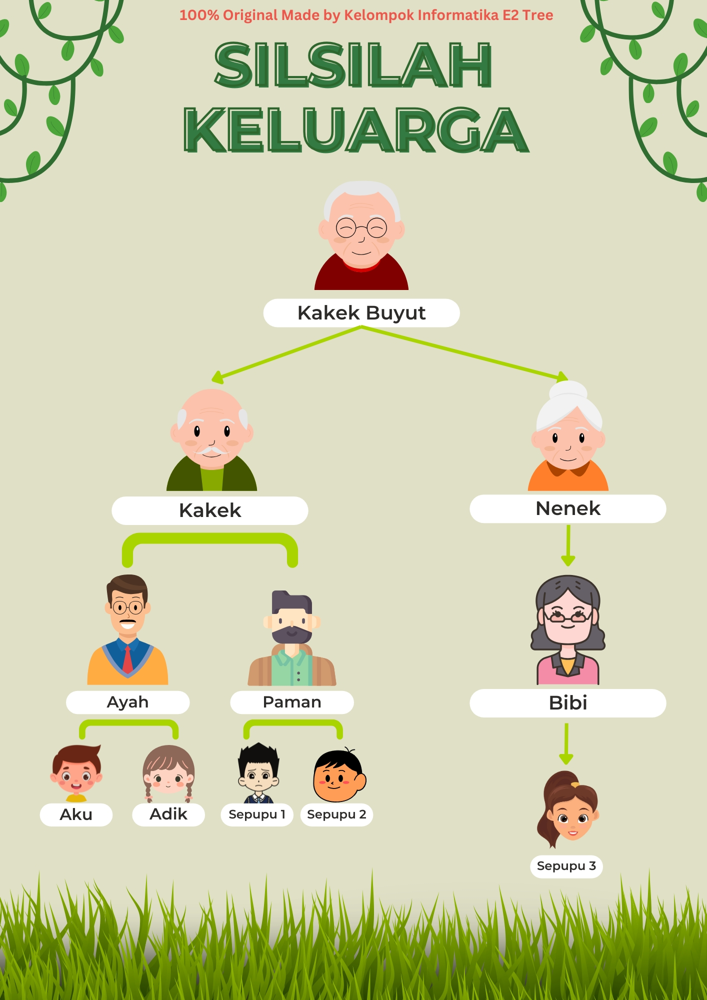

Penerapan dalam Kehidupan Sehari-Hari
Penerapan 1: Silsilah Keluarga
Silsilah keluarga dapat direpresentasikan menggunakan struktur data tree, di mana setiap node mewakili individu dalam keluarga. Berikut adalah beberapa penerapan dari struktur tree dalam konteks silsilah keluarga:
- Root Node: Kakek Buyut (karena dia yang tertua dan jadi pusat silsilah).
- Parent Nodes: Kakek, Nenek, Ayah, Paman, dan Bibi (karena mereka punya anak).
- Child Nodes: Semua yang memiliki orang tua di atasnya.
- Leaf Nodes: Saya, Adik, Sepupu A, Sepupu B, dan Sepupu C (karena tidak punya anak lagi).
Penerapan 2: Navigasi Website

Selain itu, struktur tree juga sering digunakan dalam navigasi website:
- 📌 Header (Navigasi Utama - Root)
- 🔽 Data Tree (Parent)
- 📄 Pengertian (Leaf)
- 📂 Istilah (Parent & Child)
- 📄 Node (Leaf)
- 📄 Child Node (Leaf)
- 📄 Leaf Node (Leaf)
- 📄 Root (Leaf)
- 📄 Internal Node (Leaf)
- 📄 Edge (Leaf)
- 📄 Subtree (Leaf)
- 📄 Height Of Node (Leaf)
- 📄 Depth Of Node (Leaf)
- 📄 Height Of Tree (Leaf)
- 📄 Degree Of Node (Leaf)
- 📄 Degree Of Tree (Leaf)
- 📄 Penerapan (Leaf)
- 🔽 Si Botak (Parent)
- 🤔 Siapa Botak? (Leaf)
- 💬 Kata-Kata Hari Ini (Leaf)
- 📸 Dokumentasi Botak (Leaf)